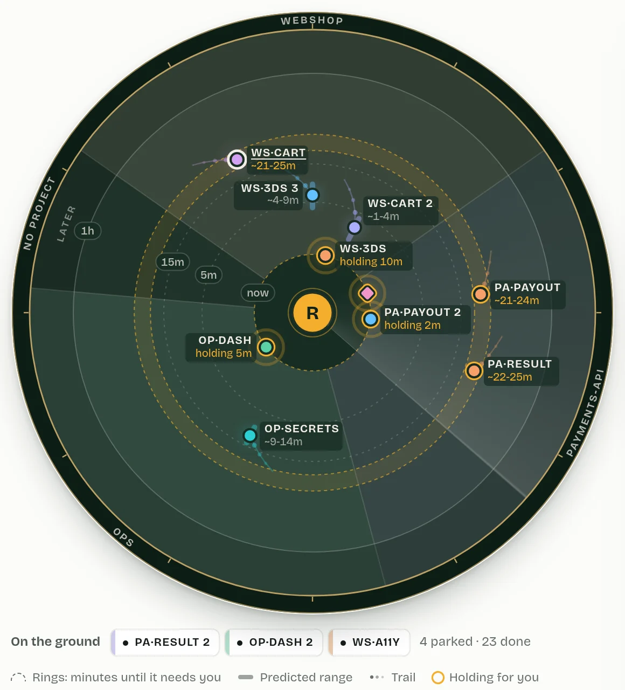

Radar its own view
You are at the centre. The rings are minutes until a thread needs you: now, 5m, 15m, an hour, later. The sectors are projects, always in the same place. Each blip is a thread in its own colour, with its predicted range drawn as a bar along its bearing and a short trail of where it was. Requests waiting on you sit on the centre ring and pulse marigold.
Beside the scope, an Art Deco arrivals board lists the next ten things that need you on split flaps: when, which flight, holding or expected, and what it brings. A flap turns over only when its row changes.
You open it to glance ahead: what will need me in the next hour, and does anything collide?